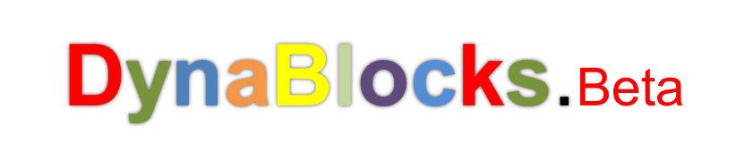

Conheça o início da plataforma que viria a se tornar o Roblox.
✦ ݁˖ O início
A história do Roblox começou em 2004, quando David Baszucki e Erik Cassel começaram a desenvolver uma plataforma que permitisse aos usuários criar e experimentar ambientes virtuais.
Durante o desenvolvimento inicial, o projeto passou por diferentes etapas até chegar ao Roblox que seria posteriormente lançado ao público.
✦ ݁˖ DynaBlocks
Durante seu desenvolvimento, um dos nomes associados às primeiras versões do projeto foi DynaBlocks.
Posteriormente, o nome Roblox foi adotado. O nome é geralmente associado à combinação das palavras robots e blocks, fazendo referência aos robôs e blocos presentes no conceito da plataforma.

✦ ݁˖ Do desenvolvimento ao lançamento
O desenvolvimento continuou durante os anos seguintes e o Roblox foi lançado oficialmente ao público em 2006.
Desde o início, uma das principais ideias da plataforma era permitir que os próprios usuários participassem da criação das experiências.
Com o passar dos anos, novos recursos foram adicionados e a plataforma passou por diversas mudanças em seus jogos, avatares, ferramentas de criação e comunidade.
✦ ݁˖ Curiosidade
O Roblox atual é bastante diferente das primeiras versões da plataforma. Ao longo dos anos, sua aparência, seus avatares e suas ferramentas de desenvolvimento passaram por diversas mudanças.
Continue explorando:
Próximo artigo:
Lançamento oficial do Roblox →